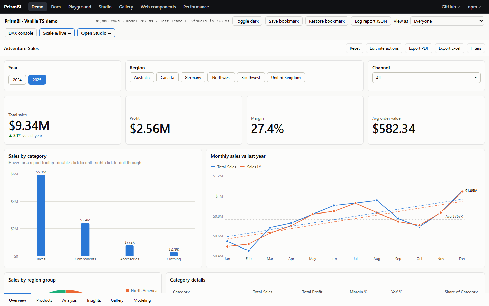

Getting started

Install #
npm install @prismbi/prismbi
# React bindings are included; React is an optional peer dependencyPrismBI ships as ES modules and CommonJS, with full type declarations. It has no runtime dependencies. Its stylesheet is injected automatically the first time a report is created.
1. Load data into a model #
Any array of plain objects works. Types are inferred (number, string, boolean, date), and ISO date strings become dates.
import { DataModel } from '@prismbi/prismbi';
const model = new DataModel()
.addTable('Sales', await (await fetch('/api/sales')).json(), {
Amount: { format: '$#,0.00' }, // optional per-column schema
ProductId: { hidden: true },
})
.addTable('Products', products)
.addDateTable('Date', '2024-01-01', '2025-12-31');2. Relate tables #
Relationships go from the many side (facts) to the one side (dimensions). Filters on a dimension flow to the facts.
model
.addRelationship({ from: 'Sales[ProductId]', to: 'Products[Id]' })
.addRelationship({ from: 'Sales[OrderDate]', to: 'Date[Date]' });3. Write measures #
model
.addMeasure('Total Sales', 'SUM(Sales[Amount])', { format: '$#,0' })
.addMeasure('Orders', 'COUNTROWS(Sales)')
.addMeasure('Avg Order', 'DIVIDE([Total Sales], [Orders])', { format: '$#,0.00' })
.addMeasure('Sales LY', 'CALCULATE([Total Sales], SAMEPERIODLASTYEAR(Date[Date]))');
model.evaluate('[Total Sales]'); // 6750
model.evaluate('[Total Sales]', [{ target: 'Products[Category]', op: 'eq', value: 'Bikes' }]); // 60004. Build a report #
Each visual has a type, a grid layout (12 columns by default, 44 px rows), fields bound to its data roles, and optional format options.
import { Report } from '@prismbi/prismbi';
const report = new Report(document.getElementById('app')!, {
model,
name: 'Sales',
pages: [
{
name: 'Overview',
visuals: [
{ id: 'year', type: 'slicer', layout: { x: 0, y: 0, w: 12, h: 2 }, fields: { field: 'Date[Year]' }, format: { slicer: { style: 'tiles' } } },
{ type: 'card', layout: { x: 0, y: 2, w: 3, h: 3 }, fields: { value: 'Total Sales' } },
{ type: 'card', layout: { x: 3, y: 2, w: 3, h: 3 }, fields: { value: 'Avg Order' } },
{ type: 'clusteredColumn', title: 'Sales by category', layout: { x: 0, y: 5, w: 6, h: 7 },
fields: { category: ['Products[Category]', 'Products[Name]'], values: 'Total Sales' } },
{ type: 'line', title: 'Trend', layout: { x: 6, y: 5, w: 6, h: 7 },
fields: { category: 'Date[MonthShort]', values: ['Total Sales', 'Sales LY'] } },
],
},
],
});The container needs a height, because the report fills it. Give #app a fixed height, or height: 100% inside a sized parent.
5. React to users #
report.on('selectionChanged', (e) => console.log('selected', e.filters));
report.on('filtersChanged', (e) => console.log(e.scope, e.filters));
report.setSlicerSelection('year', [{ target: 'Date[Year]', op: 'in', values: [2025] }]);6. Save and restore #
localStorage.setItem('report', JSON.stringify(report.toJSON()));
const definition = Report.parse(localStorage.getItem('report')!); // revives dates
new Report(el, { model, ...definition });Next #
- Data modeling · Expressions · Visuals · Interactions · Theming · React · Custom visuals
-
Run the demo:
npm run devand open http://localhost:5173. It has about 31k rows, 8 pages (including tooltip and drill-through pages), and 61 visual instances.
Try it #
One visual, bound to the demo model:
import { createVisual } from '@prismbi/prismbi';
return createVisual(el, {
model,
type: 'clusteredColumn',
title: 'Sales by category',
fields: { category: 'Product[Category]', values: 'Total Sales' },
format: { dataLabels: { show: true } },
});On the docs site (npm run docs), ▶ Run in playground opens it in an editor next to its output.